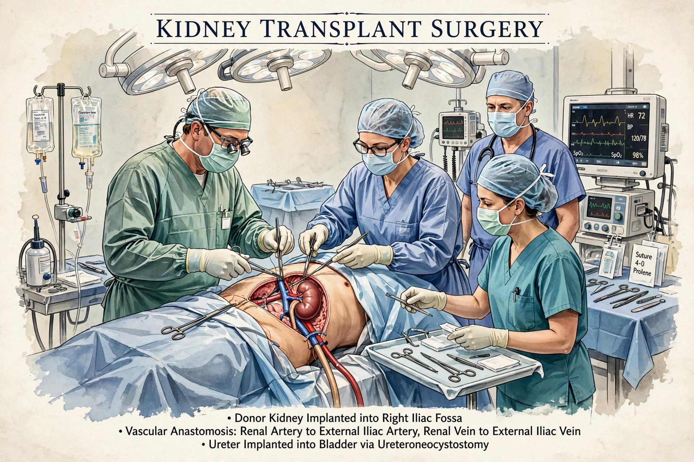

Organ transplantation is a medical procedure in which an organ is removed from one body and placed in the body of a recipient to replace a damaged or missing organ. Donors may be living, brain-dead, or circulatory-dead. Transplantable organs include kidneys, liver, heart, lungs, pancreas and intestine; tissues include corneas, skin, bone and heart valves.

The recipient's immune system may reject the graft as foreign — the same immune mechanisms behind autoimmune disease. Lifelong immunosuppressants, often including corticosteroids such as prednisone, plus agents such as tacrolimus and mycophenolate, reduce rejection at the cost of infection and cancer risk.
The first successful kidney transplant was performed in 1954 between identical twins in Boston; Christiaan Barnard performed the first human heart transplant in 1967. Cyclosporine, introduced in the 1980s, greatly improved survival.
Demand far exceeds supply, raising ethical questions about allocation, organ trafficking, and xenotransplantation research.